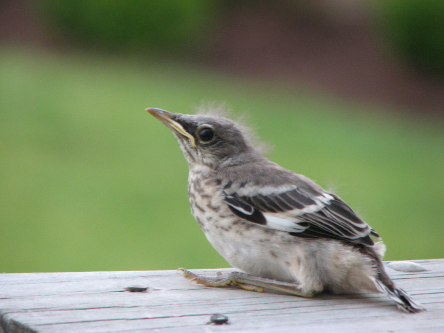

I would not be writing about the mockingbird, as I seldom see one, but during the winter of 2006-2007 I indeed had a personal experience with one. I had put out a bell-shaped "cage" feeder filled with grapes in the front lawn apple tree – for cardinals. Lo and behold, a mockingbird took over the grapes and chased the cardinal out of the tree. He would sit high in this fairly large tree, surveying his kingdom on the alert for any potential grape-eaters, defending his "grape territory."
I began tossing grapes out onto my patio where I had placed the lopped-off bottom branches of the birds' tree in a pile. Eventually the mockingbird came to the backyard and took over the grapes. His main competitor for this food was a fox squirrel who thought they were his. If I tied grapes to the branches of the fir tree, the squirrel and mockingbird would vie for them. They never came to blows, but they had some "standoffs," glaring at each other through the tree branches.
The mockingbird is a large – 11 inch long – sleek gray bird with white underparts, white outer feathers on its long tail, and a small white patch on the lower edge of its folded wing. The white wing feathers are conspicuous in flight.
The mockers' menu includes a wide variety – insects and spiders, fruits and berries, but also small snakes, lizards, crayfish and snails! It will come to feeders for fruit, suet and bread. As with the catbird, a very similar bird though much smaller, it will eat raisins that are soaked in water and plumped.
Wikipedia suggests that the mocker's habit of spreading its wings while foraging may startle insects to reveal themselves.
The mockingbird of course is best known for its amazing aptitude for mimicking other birds' songs. The mocker will perch high in a tree, a tall post or high building late in the afternoon and render a spectacular concert. It will repeat one series of notes several times. It may leap up and flash its wings as a territorial display. You may also hear it mimic the sounds of animals and frogs or even mechanical sounds. It is thought that the wider the bird's repertoire, the more likely he will be able to attract a mate.
Mockingbirds are consistent vocalists that may sing throughout the night and throughout the year except when molting, but it is most vocal just before daybreak and when the sun is at the horizon. It is attributed to knowing and singing from 50 to 200 different birdsongs. It makes throaty sounds when challenging a predator. I read recently that they will mimic a human's whistled song if repeated several times.
One summer while visiting friends in Virginia, my friends predicted a mockingbird would appear at about 5:00 p.m. and sing and sing for seemingly hours. And it did. Beautiful notes poured forth from that throat. Visiting my brother and sister-in-law in Florida, a mockingbird perched on a light pole late in the afternoons and sang and sang. Some insensitive people found it annoying!
My daughter Lesley has been blessed with nesting mockingbirds every year since their house was built. They came to her feeders constantly during the breeding season for grapes, even showing their young where to find the succulent morsels. She said it was funny to watch the babies hop or flutter after their parent who had a grape she thought the parents probably were wondering when the kids were ever going to figure out how to get their own grapes.
The mockers didn't seem to mind the family or the dogs in the yard. They came for the grapes. One would perch on their satellite dish and squawk until she put out grapes. She remembers when one baby sat on the railing of the deck. Her family used their front door and walked the dogs on leashes in front of the house until he disappeared – it was gone the next morning. She didn't hear them performing their repertoire of songs while they had babies to feed.
The mockingbirds establish their nesting territory during the late winter. Wikipedia says a female who enters the area will be pursued energetically with loud songs unless she shows no interest, and then he will use softer tones to woo her. They prefer a nesting site from three to ten feet above the ground.
The male builds the nest while the female stays on the lookout for predators that include other mockers, people, snakes, cats and large birds. The nest has a base of twigs lined with leaves, grass, moss, and in my daughter's yard, probably some yellow lab hair!
The three to five blue or greenish speckled eggs incubate for about two weeks. Both parents feed the young that fledge in 10 to 13 days.
Mockers are feisty defenders of their one- to two-acre territory, chasing away other birds that venture into it – robins, jays, starlings and other mockingbirds.
Mockingbirds are beautiful birds with incredible vocal ability. I'll never forget my "mockingbird winter!"
